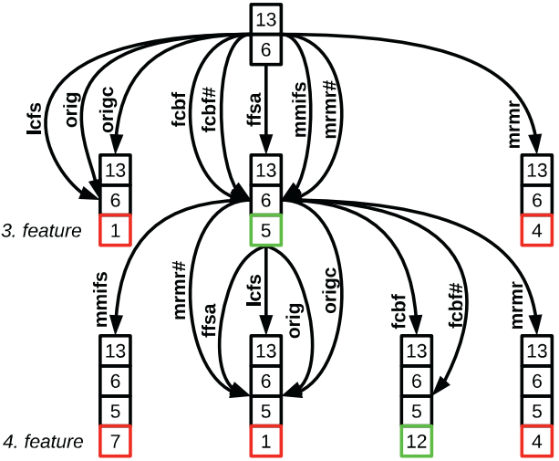
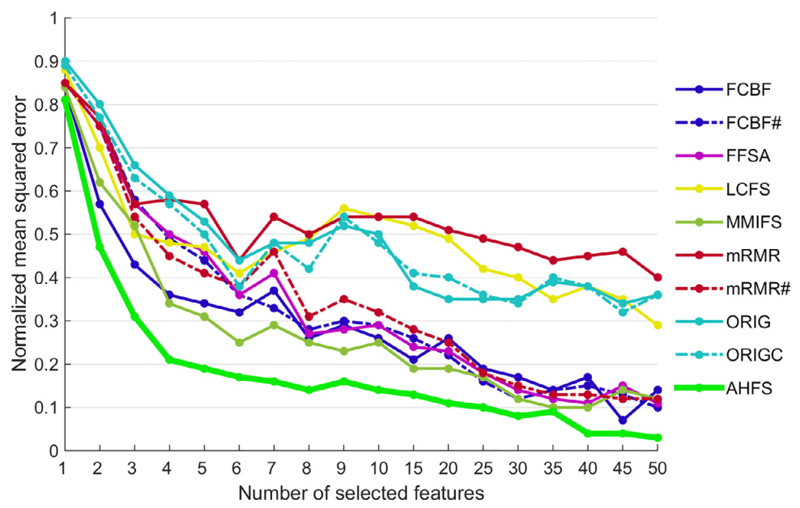

Adaptive, Hybrid Feature Selection (AHFS)
Zsolt János Viharos, Krisztián Balázs Kis, Ádám Fodor, Máté István Büki

Abstract
This paper deals with the problem of integrating the most suitable feature selection methods for a given
problem in order to achieve the best feature order. A new, adaptive and hybrid feature selection approach
is proposed, which combines and utilizes multiple individual methods in order to achieve a more generalized solution.
Various state-of-the-art feature selection methods are presented in detail with examples
of their applications and an exhaustive evaluation is conducted to measure and compare the their performance with the proposed approach.
Results prove that while the individual feature selection methods
may perform with high variety on the test cases, the combined algorithm steadily provides noticeably
better solution.
Task
- Develop an adaptive, hybrid feature selection (AHFS) approach that combines multiple feature selection methods to achieve improved and generalized feature ordering for accurate modeling.
Challenges
- No universal best feature selection method exists; performance varies widely depending on dataset and problem.
- Individual feature selection techniques (filter, wrapper, embedded) have trade-offs between accuracy and computational cost.
- Handling diverse data characteristics such as noise, outliers, non-linearity, and high dimensionality is complex.
- Balancing computational efficiency with selection quality, especially for large real-world datasets.
Proposed Method
- Combine multiple predetermined feature selection algorithms dynamically at each step of a Sequential Forward Selection (SFS) search.
- At each iteration, candidate features are proposed by each incorporated FS method based on its own criteria.
- Select the best candidate feature by training a Multi-Layer Perceptron (MLP) model for each candidate and choosing the one yielding the lowest modeling error.
- Iterate until reaching the desired feature subset size, thus adapting both feature and method selection simultaneously.
- Hybrid approach unifies advantages of filter, wrapper, and embedded methods, making it adaptable and application-specific.
Main Results
- AHFS consistently outperforms individual feature selection methods on artificial datasets with various distributions, noise levels, outliers, and nonlinear dependencies.
- On real-world benchmark datasets, AHFS achieves significantly lower modeling errors, nearly doubling accuracy compared to individual methods.
- The method finds important features earlier during selection compared to other algorithms.
- AHFS matches exhaustive search accuracy on small datasets but with orders of magnitude less computation time.
- Computationally more expensive than individual methods but provides significantly better model accuracy and robustness.
- Offers flexibility to incorporate additional FS methods and improve search strategies for efficiency.
Visualization
The figure shows the average of the individual feature selection
performances measured on each assignment. Each line describes
the performance of a single, individual feature selection method,
where the x axis shows the number of features used for building
the model and the y axis shows the normalized model error.
The overall performance diagram
mirrors, that the proposed algorithm significantly outperforms the
individual methods in general. Furthermore, the biggest difference reveals itself in the case of the first 4 to 25 selected features which
means that the new method finds the most important features earlier than the other methods

BibTex
If you found our research helpful or influential please consider citing:
@article{VIHAROS2021107932,
author = {Zsolt János Viharos and Krisztián Balázs Kis and Ádám Fodor and Máté István Büki},
title = {Adaptive, Hybrid Feature Selection (AHFS)},
journal = {Pattern Recognition},
volume = {116},
pages = {107932},
year = {2021},
issn = {0031-3203},
doi = {https://doi.org/10.1016/j.patcog.2021.107932},
url = {https://www.sciencedirect.com/science/article/pii/S0031320321001199}
}